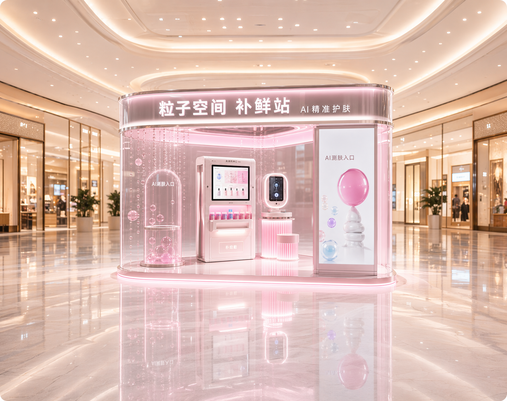
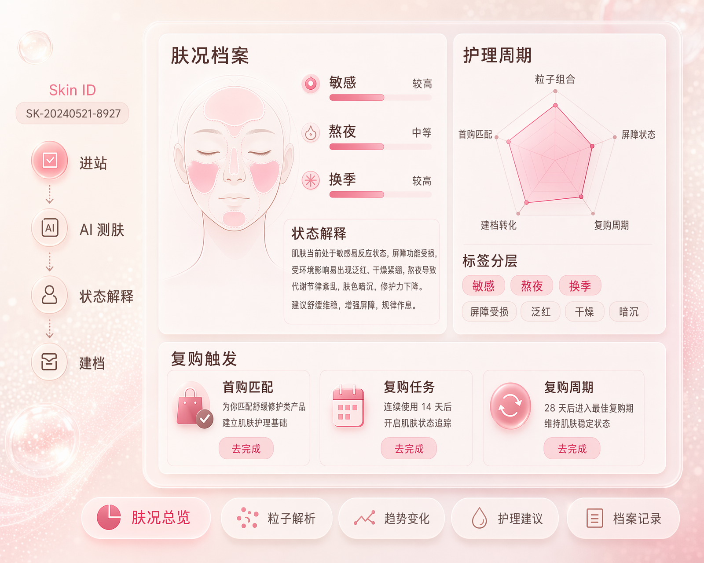
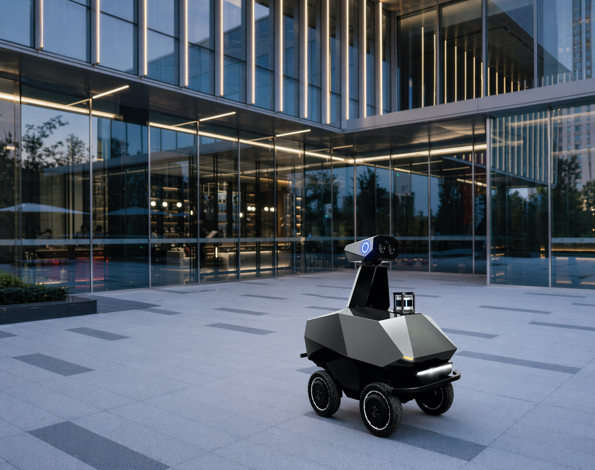

首个改造动作
离增长结果
最近的一步
最近的一步
高频近结果可验证
动作切口先锁定最值得改的一步
AI 增长不是先铺工具，而是先找离结果最近、重复最高、最能验证的一步切进去。
AI 增长不是先铺工具，而是先找离结果最近、重复最高、最能验证的一步切进去。
把影响转化的判断点拆清楚：何时追问、怎样解释、谁来接手，让 AI 稳定推进关键动作。
触达、解释、成交和复购信号都要回写为档案与指标，下一轮动作才不是重新开始。
当关键动作跑通，再把判断、话术、SOP 和训练沉淀成 Skill，让团队按同一方法复制。
业务增长的关键不是多卖一款护肤品，而是降低每一次护肤决策的风险。从测肤解释、Skin ID 建档到复购提醒，把一次体验沉淀为长期客户资产。

把敏感、熬夜、换季等检测结论，拆成顾问可讲、用户可选、系统可追踪的动作。

Skin ID 的价值不是只建一份档案，而是把肤况、组合、反馈和复购周期变成后续跟进依据。
把肤况、粒子组合、反馈和复购节奏编码成可追踪、可复购、可分析的用户资产。
招商卖的不是一个点位，而是总部托管的获客、复购、内容和训练能力。
总部把私域复购、内容投放、点位看板和加盟商训练统一托管，让单点模型可以复制。
智能硬件成交关键在场景价值、试用证据和渠道培训；业务增长的难点不是产品不强，而是客户不容易理解为什么现在要买。
AI 增长方案先识别客户最容易理解的购买理由，再把参数、场景和证据组织成售前话术

试用周期 12 天，自动汇总巡逻、任务、告警和成交建议。
客户不是缺少功能参数，而是需要看见试用后的场地价值、风险变化和部署边界。
AI 把巡逻、告警、响应和部署边界合并成销售可直接使用的一页客户决策材料。
总部不只是下发资料，而是把场景价值、试用证据和部署边界训练成渠道伙伴能讲清、能演示、能跟进的能力。
AI 拆成课件、问答、演练题和评分标准
AI 把场景价值、试用证据和部署边界整理成可学习、可演练、可复用的渠道能力包。
AI 不只提醒销售跟进，而是根据场景价值、试用证据和客户反馈判断谁先跟、说什么、下一步如何推进。
AI 把行业内容、场地需求和试用反馈合并判断，自动生成客户分层、方案摘要和下一步跟进动作。
本地连锁的增长不是缺活动，而是获客、咨询、复购和训练断裂。AI 增长方案把门店增长拆成顾问和店长每天能执行、能复盘的动作。
AI 先判断顾客为什么愿意到店，再把内容、体验套餐和跟进话术变成顾问当天能执行的获客动作。
距离、痛点、套餐意向和咨询热度
内容标题、体验入口和顾问话术
渠道来源、到店率和成交动作
把平台曝光、顾客痛点和体验套餐，转成可预约、可跟进、可复盘的到店理由。
把顾客问题、体验反馈和预算边界，转成顾问能解释、能承接、能跟进的转化动作。
AI 不替顾问销售，而是把咨询前准备、现场解释、体验承接和离店跟进拆成标准动作。
AI 复访复购不是定时提醒，而是把客户状态、门店动作和成交结果沉淀成可持续运营的账本。
体验反馈、余额周期、沉默风险统一进入客户账户。
复访话术、护理建议、组合升级按客户状态生成。
未成交原因、复购节点和顾问表现进入复盘库。
把离店后的客户资产池，转成门店今天要处理的复访、复购和唤醒动作。
AI 培训不是做课件，而是把咨询、转卡、复盘中的有效方法拆成课程卡、练习题和验收标准。
把优秀顾问和店长的判断、话术和复盘方法，拆成每天可练、可验收的能力任务。
继续教育成交的关键不是秒回问题，而是识别学员动机、讲清课程价值和持续培育意向。AI 增长方案把破冰、需求探询、价值呈现和异议处理沉淀为顾问团队可复用的能力。
AI 把学员动机转成招生动作优先级，让顾问知道该推进申请、补充价值、确认资格，还是进入长期培育。
从学员提问、语气和背景里识别真实动机，再决定该解释价值、补充资料还是推进申请。
AI 不复述课程卖点，而是根据学员动机、顾虑强度和成交阶段，判断先讲什么价值、怎么讲、下一步怎么接。
围绕学员最在意的结果，把课程模块、师资资源和校友网络转成可采纳的价值证据。
根据学员目标自动组合课程卖点、资源证明和异议回应。
AI 不只是提醒顾问跟进，而是把意愿、阻力和时点合成一张派单票，告诉团队下一步该怎么推。
适合已经认可方向，但仍在犹豫投入和报名时点的学员。
把长周期咨询拆成可判断的推进节点：什么时候解释资料、补案例、答异议、催申请，由 AI 给出下一步动作。
AI 根据咨询记录识别团队短板，把追问、价值表达和异议收尾拆成可派发、可评分、可复盘的训练任务。
AI 把高转化顾问的破冰、追问、价值呈现和异议处理沉淀成可训练、可评分、可迭代的方法资产。
先问目标，再追问行业阶段，把顾虑落到课程价值和申请动作。
高转化对话片段